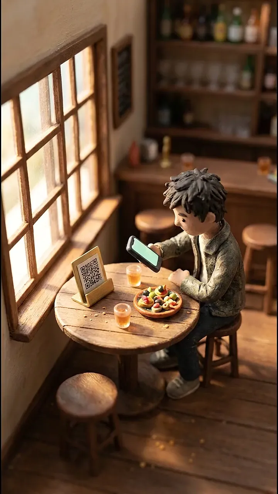
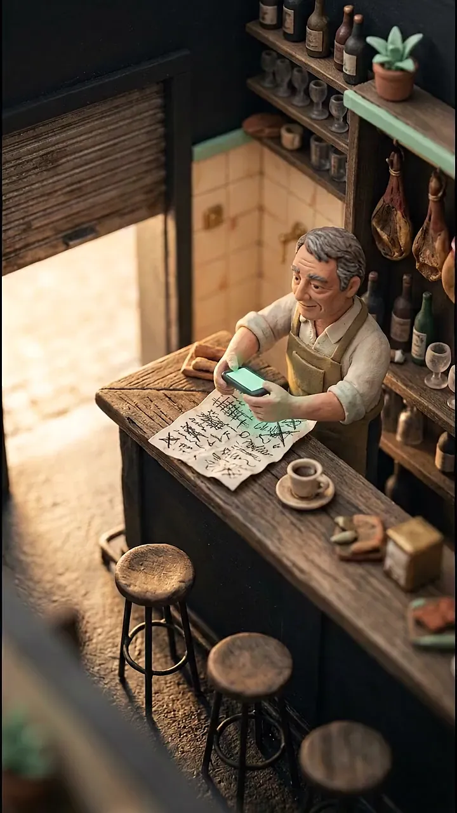
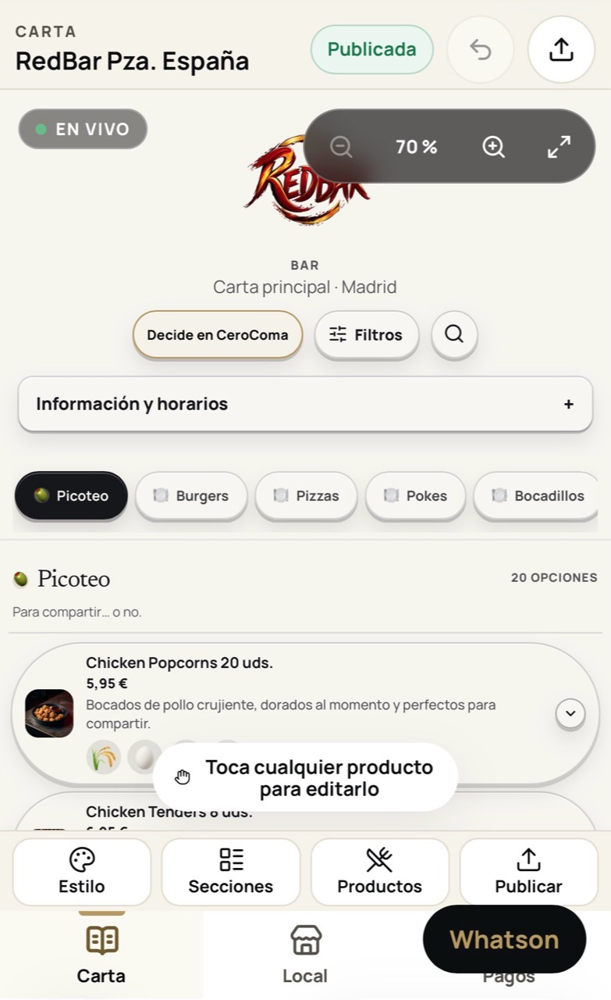
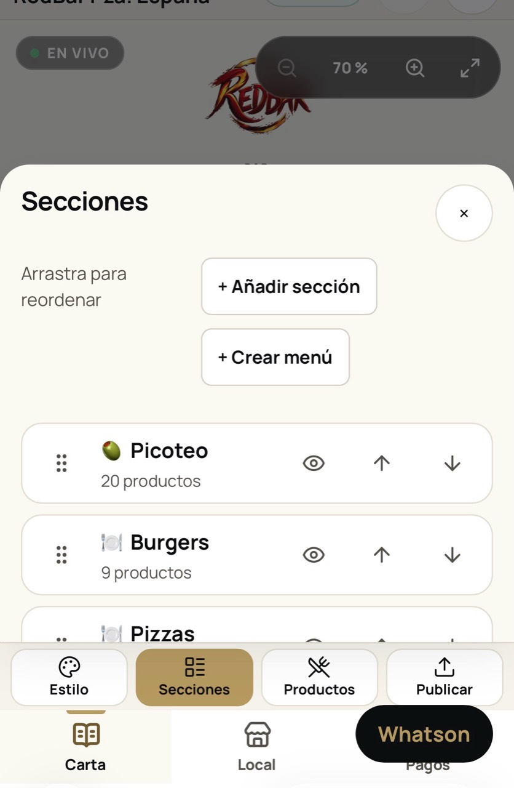
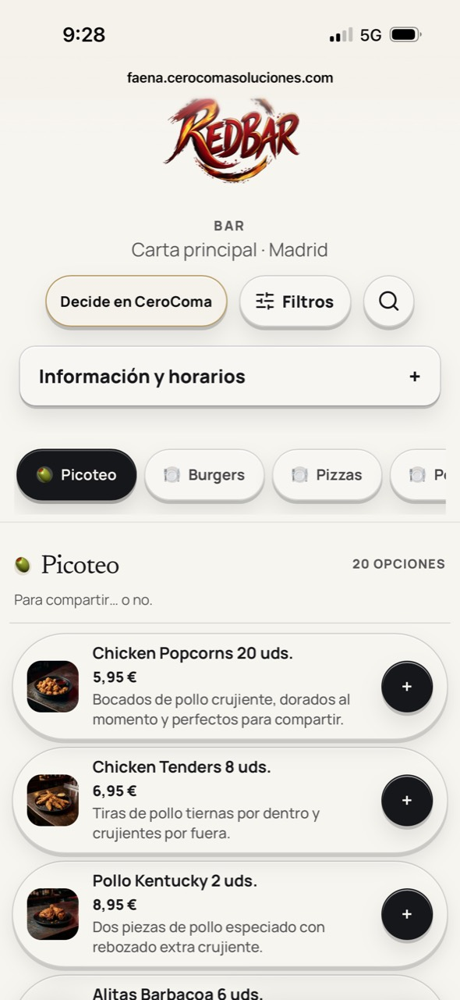
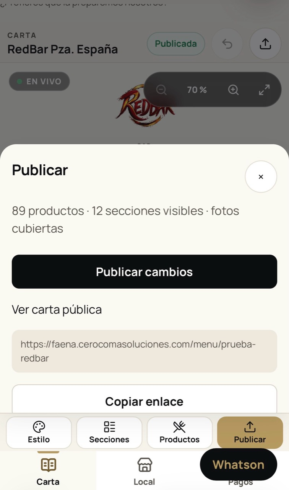
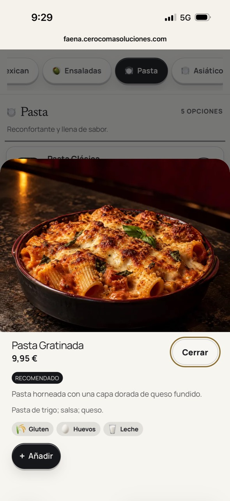

FAENA · La carta digital de CeroComa
Tu carta cambia.
Tu QR, nunca.
Del papel al móvil de tus clientes.
Sin reimprimir. Sin descargar una app.
Gratis, sin tarjeta. Publicas cuando la has revisado.
Del papel al QR
Una carta nueva.
En tres pasos.
La IA hace la primera lectura. La última palabra la tienes tú.

01 · Sube
Hazle una foto.
O sube el PDF.
FAENA propone los platos, las secciones y los precios. También puedes escribir la carta a mano.
La lectura prepara un borrador. No publica sola.
Ordena tus secciones

02 · Revisa
Que quede
como tú quieres.
Corrige precios, ordena los platos y confirma los alérgenos. Cuando todo esté bien, pulsa publicar.
Ver lo que puedes hacer
Ver cómo se publica

Ver un plato en detalle

03 · Comparte
Un QR.
Todos los cambios.
Lo imprimes una vez. Cambias un precio, publicas de nuevo y el cliente ve la carta actualizada.
Abre una carta de ejemploA tu ritmo
Empieza gratis.
Crece cuando lo necesites.
Tu carta sencilla y tu QR.
0 € para siempre BásicoFotos, estilo y filtros de dieta.
2,99 € / mes ProIdiomas y Decide en CeroComa.
8,99 € / mes Red PilotoEquipo, mesas y comandas.
HablemosIVA incluido. Básico y Pro: prueba de 30 días a petición y activación manual por WhatsApp. Red se pone en marcha contigo. Sin cobro automático ni pagos desde la carta.
Si prefieres verlo
Te lo cuenta
la propia carta.
Resumen del vídeo y funciones por plan
Una carta de papel presenta cómo revisar y publicar con un QR permanente. Las fotos y los filtros son de Básico; los idiomas y Decide, de Pro; equipo y mesas, del piloto Red. Consulta los derechos vigentes antes de elegir un plan.
Preguntas frecuentes
Lo que suele preguntar un bar antes de empezar.
¿Qué es FAENA exactamente?
Una herramienta de CeroComa que convierte la carta física de un bar o restaurante en una carta digital editable y la publica con un código QR que no cambia.
¿Puedo usar la carta que ya tengo?
Sí. Subes fotos (JPG, PNG, WebP o HEIC) o un PDF, aunque tenga varias páginas. La IA propone platos, precios y secciones en un borrador, señala lo que conviene revisar y tú decides qué pasa a la carta antes de publicar.
¿En qué idiomas la ven mis clientes?
En español, inglés, francés, italiano y alemán. Gratis y Básico publican en español; Pro y Red permiten los cinco idiomas. Al guardar y publicar, los nombres y descripciones de platos y secciones se traducen automáticamente, y el cliente elige el idioma al abrir la carta.
¿Se ven los alérgenos?
Sí. El local confirma los alérgenos de cada plato: Gratis los muestra por nombre y Básico y superiores con iconos. Decide en CeroComa, incluido en Pro y Red, ayuda a elegir según gustos; es orientativo y no sustituye esa información.
¿Tengo que cambiar el QR cuando modifico un precio?
No. Cambias el precio en el panel, publicas y el mismo QR muestra la carta actualizada. No hay que reimprimir el código.
¿Puedo añadir o quitar productos y crear secciones nuevas?
Sí. Platos, precios, fotos y secciones se editan desde el panel, también después de publicar. Los cambios se guardan como borrador y el cliente no los ve hasta que pulsas «Publicar cambios».
¿Y si publico algo por error?
Cada publicación queda en un historial de versiones. Puedes restaurar una anterior en cualquier momento.
¿Mis clientes tienen que instalar una aplicación?
No. Escanean el QR o abren el enlace y la carta se ve en el navegador del móvil, sin registrarse.
¿Tengo que montarla yo?
Como prefieras. Puedes hacerlo tú en la app, o mandarnos la carta por WhatsApp y te la entregamos montada, con la aplicación y los códigos QR funcionando.
¿Cuánto tarda en estar publicada?
Si la montamos nosotros, acordamos el plazo contigo. Si la haces tú, empiezas en Gratis al registrarte y publicas tras revisar la carta. Básico, Pro y sus pruebas se activan por WhatsApp; Red se pone en marcha contigo.
¿FAENA toma pedidos o cobra en mesa?
En todos los planes el cliente puede preparar una lista para enseñarla al camarero. Red incorpora mesas, camareros y comandas en un piloto acompañado. No hay pagos desde la carta; cocina y llamada al camarero siguen pendientes como servicio general.
Para ir más a fondo: cómo digitalizar la carta de un restaurante, paso a paso, y cómo cambiar los precios de una carta QR sin imprimir otro código, aunque no uses FAENA.
Tu siguiente carta
Menos faena.
Más FAENA.
Red sigue en piloto. Cocina, llamadas al camarero y pagos desde la carta no se ofrecen como servicio general.